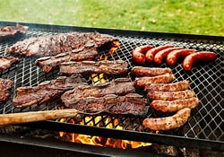
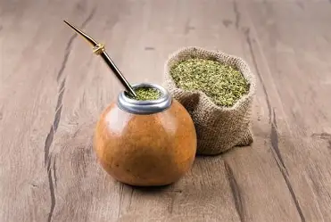

Mis Gustos



Me encanta el asado, El futbol, la musica ,el mate ,los juegos y el tiempo en familia
hola, Soy un estudiante analista de datos y desarrollador web, estoy precticando para mi portafolio y poder desarrollar habilidades de programacion y analisis de datos. Actual mente tengo 24 años (junio del 2026) , tengo muchas ganas de aprender a programar profesionalmente y desarrollar productos que sean utiles para mi desarrollo personal, soy nacido en argentina y actualmente vivo en temuco chile, nose si para cuando vean esto aun este ahi. me encanta la musica en general escucho de todo un poco, mi preferencia es muy variada y me encanta el deporte miro mucho futbol y lo juego poco pero me gusta. estoy casado con mi esposa Yaslin y tengo una perrita de 2 años llamada Lucy.
se un poco de todo pero me encanta lo que es paguinas web y front end donde puedo ver y acomodar visualmente un paguina web me gusta mucho el diseño y la estetica de las paginas , estoy aprendiendo de Bases de datos para agrandar mi portafolio de habilidades y encontrar mas oportunidades laborales para crecer.
mis objetivos a corto plazo es seguir aprendiendo y desarrollando habilidades de programacion y analisis de datos, quiero seguir practicando para mi portafolio y poder desarrollar proyectos que sean utiles para mi desarrollo personal y profesional. a largo plazo quiero ser un desarrollador web profesional y poder trabajar en proyectos que me apasionen y me permitan crecer como profesional, tambien quiero seguir aprendiendo sobre analisis de datos y poder aplicar esos conocimientos en proyectos que sean utiles para la sociedad.


Me encanta el asado, El futbol, la musica ,el mate ,los juegos y el tiempo en familia